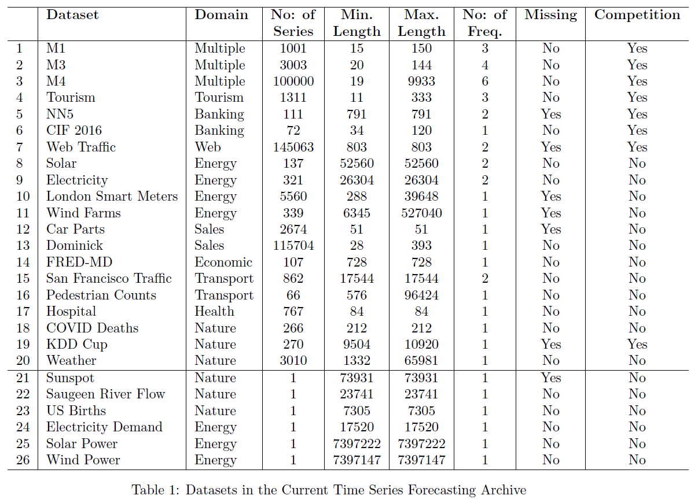

Long-term time-series forecasting (LTFS)
- Given historical data, forecasting data in the future.
- long-standing task.
Application
- traffic and environment
- traffic flow
- environment pollution
- river flow
- streamflow
- energy management
- electricity demand
- power load forecasting
- solar power
- financial investment
- energy cost building
- forex price
- gold price
- stock price
- stock exchange
- healthcare prediction
- heart rate
- COVID-19 prediction
- forecasting pandemic
- Influenza outbreak forecasting
- Parkinson's disease diagnosis
- weather forecasting
- climate forecasting
- wind speed
- rain fall
- wind power forecasting
Problem Formulation
For time series containing variates (univariate/multivariate), given historical data , wherein is the look-back window size and is the value of the variate at the time step. The time series forecasting task is to predict the values at the future time steps.
when ,
- IMS: iterated multi-step forecasting, learns a single-step forecaster and iteratively applies it to obtain multi-step predictions. IMS predictions have smaller variance thanks to the autoregressive estimation procedure, but they inevitably suffer from error accumulation effects. Consequently, IMS forecasting is preferable when there is a highly-accurate single-step forecaster, and is relatively small.
- DMS: direct multi-step forecasting, directly optimizes the multi-step forecasting objective at once. In contrast, DMS forecasting generates more accurate predictions when it is hard to obtain an unbiased single-step forecasting model, or is large.
Data
- So far, little progress has been made to exploit pre-trained or foundation models for time series analysis.
- One main challenge is the lack of the large amount of data to train a foundation model for time series analysis.
- The largest data sets for time series analysis is less than 10GB, which is much smaller than that for NLP.
Common setting:
- look back window:
- long time forecasting: for ILI dataset and for other datasets
whole data: (large datasets: Weather, Traffic, and Electricity)

popular dataset for benchmark

Classical Method
- Auto Regressive Integrated Moving Average(ARIMA)
- GBRT, gradient boosting-greedy function approximation
- filtering-based mothod
- SVM
- GP, time-consuming
- HMM, time-consuming
- clusting-based
DL, Until 2023
目前该领域都是小模型，单卡训练的百M内的模型，主要瓶颈即数据量，近几年主流:
- CNN-based: LogTrans, TimesNet
- MLP-based: DLinear, LightTS
- Fourier/auto-correlation machanism: FEDformer, Autoformer
- Transformer-based: PatchTST, Stationary, Informer, Pyraformer
| Time | Publish | Paper | Describe |
|---|---|---|---|
| 2023 | NIPs | One Fits All GPT4TS | GPT pretrained on NLP/CV and finetuned on time-series sequence, only six layers, transfer learning |
| 2023 | ICLR | TimesNet | treated time series as a 2D signal and utilized a convolution-based inception net backbone to function as a comprehensive time series analysis model, provide benchmark lib, 3k+ stars |
| 2023 | ICLR | PatchTST | divide a sequence into patches to increase input length and reduce information redundancy, with channel independent. 和waveformer基本一致的预处理 |
| 2023 | ICLR | DLinear | a simple MLP-based model and validates channel-independence works well in time series forecasting. |
| 2022 | ICML | FEDformer | uses Fourier enhanced structure to improve computational efficiency and achieves linear complexity |
| 2022 | NIPs | None-Stationary | propose Non-stationary Transformers as a generic framework with two interdependent modules: Series Stationarization and De-stationary Attention. |
| 2022 | ICLR Rejected | ETSformer | propose two novel attention mechanisms – the exponential smoothing attention and frequency attention |
| 2022 | / | LightTS | a light deep learning architecture merely based on simple MLP-based structures |
| 2021 | AAAI best paper | Informer | provide a benchmark dataset ETT, propose ProbSparse self-attention mechanism and generative style decoder, can predicts the long time-series sequences at one forward operation |
| 2021 | NIPs | Autoformer | replaces the attention module with an Auto-Correlation mechanism. |
| 2021 | ICLR | Pyraformer | applies pyramidal attention module with inter-scale and intra-scale connections which also get a linear complexity. |
| 2020 | ICLR | Reformer | improve the efficiency of Transformers, replace dot-product attention by one that uses locality-sensitive hashing and use reversible residual layers instead of the standard residuals |
| 2019 | NIPs | LogTrans | uses convolutional self-attention layers with LogSparse design to capture local information and reduce the space complexity |
- NIPs注重理论/公式分析
- ICLR的可视化/实验分析居多
DL, Update 2024
- TimeMixer，ICLR 2024
- 3+8+5 to 6，accept poster
- Down-sampling，Multiscale Time Series，纯mlp，小模型
- iTransformer，ICLR 2024
- vanilla transformer with channel mixing in self-attention
- Variate-based Embedding
- TMDM, ICLR 2024
- 另一个赛道，取巧，文章没有提也没和其他transformer based比较结果，运气好，审稿人也不了解ts，审稿意见少；diffusion based model公式多，占优势
- Diffusion based model, 只是做到了diffusion系列的sota，MSE和MAE比其他transformer差很多
- 引入了两个evaluation metric：QICE，CRPS，评估分布的不确定性，由于transformer based模型不存在该项误差，所以论文理所应当的在对比MSE和MAE时没有和MSE-SOTA的模型比较，取巧
- InjectTST，中国移动研究院
- non-overlap patch
- channel independent backbone
- channel mixer: cross attention (KV)
- 其他文章如：MCformer，highlight也是在如何设计channel mixer
- LLaTA, 清华深研院
- 引入文本数据
- 通过文本和时序数据的模态对齐，优化现有的GPT4TS，cross-modality knowledge distillation
- 另一篇引入文本的文章Time-LLM，在input前面增加prefix embedding token，生成patch embedding时把ts当做Q，把prompt作为KV，输出cross-attention作为data embedding token
- UniTS，Unified model，可输入文本，ts等，可做不同的任务，imputation、generation、classification，主要模块是cross attention，attention与patchtst类似，FFN引入conv，其他方法上创新少，主要是unified model的概念
- Caformer
- 任务和UniTS一致，long-term and short-term forecasting，imputation，classification，anomaly detection
- 偏向基于domain knowledge的feature extraction model design，手动设计cross dimension dependency
- ConvTimeNet
- overlapped patch window
- full conv net， depth wise and point wise
- TimeMachine, D-Mamba
- SSM替代self-attention
- handling of channel-mixing and channel-independence situations with SSM modules
- unidirectional vanilla S4
- MegaByte, byteGPT
- 两个decoder，patch decoder+byte decoder
- 相比于byte tokenizer，可减少FLOPS
- Megabyte只在nlp上测试，MambaByte也是